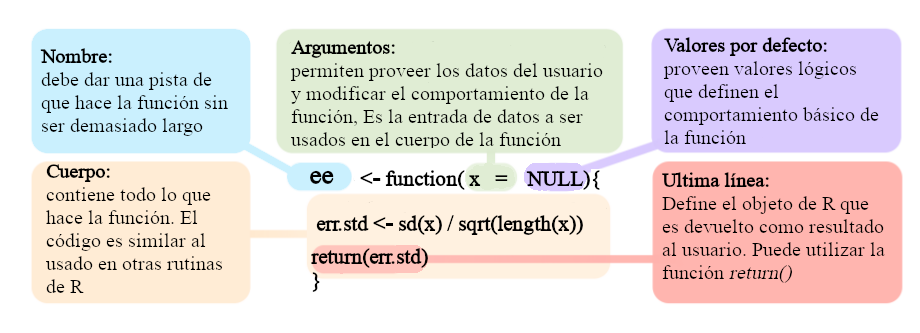
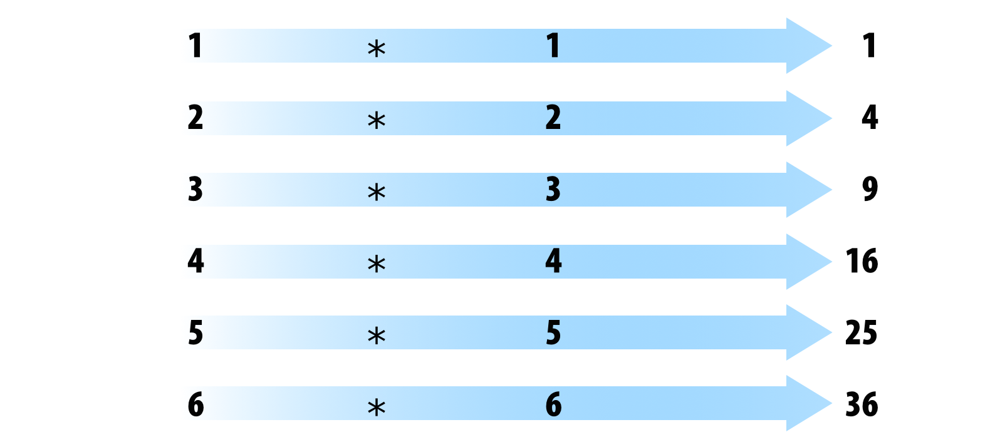

| Homogéneo | Heterogéneo | |
|---|---|---|
| 1d | Vector atómico | Lista |
| 2d | Matriz | Cuadro de datos (data frame) |
| nd | arreglo (Array) |
Elementos básicos del lenguaje R
Objetivo del manual
Familiarizarse con los bloques básicos usados en la programación en R
Conocer las fuentes principales de documentación estandarizada en R
1 ¿Qué es R?
- Un Lenguaje de Dominio Específico (DSL) libre para la estadística y el análisis de datos
- Una colección de más de 18695 paquetes (al sep-21-2022)
- Una comunidad grande y activa en la industria y el mundo académico
- Una forma de hablar “directamente” con su ordenador
Históricamente:
- Basado en el lenguaje de programación S
- Alrededor de 20 años de antigüedad (el linaje data de 1975 - hace casi 40 años)

2 Rstudio
Entorno de desarrollo integrado (IDE) para R. Incluye:
- Una consola
- Editor para resaltar la sintaxis que soporta la ejecución directa del código
- Herramientas para el trazado, el historial, la depuración y la gestión del espacio de trabajo

3 Elementos del lenguaje R
- Vectores
- Listas
- Matrices
- Marcos de datos (data frames)
- Funciones (incluyendo operadores)
- Tablas (tables)
- Atributos
Arreglos (arrays)Ambientes
4 Estructura básica de la representación de datos
La estructura de datos básica en R es el vector. Hay dos tipos básicos de vectores: vectores atómicos y listas.
Tienen tres propiedades comunes:
- Tipo,
typeof()(clase/modo ~) - Longitud,
length()(número de elementos) - Attributes,
attributes()(metadatos)
Se diferencian en los tipos de sus elementos: todos los elementos de un vector atómico deben ser del mismo tipo, mientras que los elementos de una lista pueden tener diferentes tipos
Los números o cadenas individuales son en realidad vectores de longitud uno.
4.1 Vectores atomicos
Tipos de vectores atómicos:
- Lógico (booleano)
- Entero
- Numérico (doble)
- Caracteres
- Factores
Los vectores se construyen con la función c():
Código
x <- 1
x1 <- c(1)
all.equal(x, x1)
## [1] TRUE
class(x)
## [1] "numeric"
y <- "something"
class(y)
## [1] "character"
z <- TRUE
class(z)
## [1] "logical"
q <- factor(1)
class(q)
## [1] "factor"
Los vectores sólo pueden contener elementos del mismo tipo. Los tipos diferentes de elementos serán forzados al tipo más flexible:
Código
v <- c(10, 11, 12, 13)
class(v)
## [1] "numeric"
typeof(v)
## [1] "double"
y <- c("a", "b")
class(y)
## [1] "character"
x <- c(1,2,3, "a")
x
## [1] "1" "2" "3" "a"
class(x)
## [1] "character"
Los valores que faltan se especifican con NA, que es un vector lógico de longitud 1. NA siempre será interpretado al tipo correcto si se utiliza dentro de c():
Código
v <- c(10, 11, 12, 13, NA)
class(v)
## [1] "numeric"
v <- c("a", "b", NA)
class(v)
## [1] "character"
4.2 Listas
Puede contener objetos de diferentes clases y tamaños. Las listas se construyen con list():
Código
l <- list("a", 1, FALSE)
l[[1]]
[1] "a"
[[2]]
[1] 1
[[3]]
[1] FALSECódigo
class(l)[1] "list"Código
str(l)List of 3
$ : chr "a"
$ : num 1
$ : logi FALSEEn realidad pueden ser vistas como cajones donde se pueden poner cualquier otro tipo de objeto:
Código
l <- list(c("a", "b"), c(1, 2, 3, 4), c(FALSE, TRUE, FALSE))
str(l)List of 3
$ : chr [1:2] "a" "b"
$ : num [1:4] 1 2 3 4
$ : logi [1:3] FALSE TRUE FALSECódigo
l2 <- list(l, l)
str(l2)List of 2
$ :List of 3
..$ : chr [1:2] "a" "b"
..$ : num [1:4] 1 2 3 4
..$ : logi [1:3] FALSE TRUE FALSE
$ :List of 3
..$ : chr [1:2] "a" "b"
..$ : num [1:4] 1 2 3 4
..$ : logi [1:3] FALSE TRUE FALSE
4.3 Nombrar elementos
Los vectores pueden ser nombrados de tres maneras:
- Al crearlo:
x <- c(a = 1, b = 2, c = 3). - Al modificar un vector existente en su lugar:
x <- 1:3;names(x) <- c("a", "b", "c")O bien:x <- 1:3;names(x)[[1]] <- c("a") - Creando una copia modificada de un vector:
x <- setNames(1:3, c("a", "b", "c"))
Código
y <- c(a = 1, 2, 3)
names(y)[1] "a" "" "" Código
v <- c(1, 2, 3)
names(v) <- c('a')
names(v)[1] "a" NA NA Código
z <- setNames(1:3, c("a", "b", "c"))
names(z)[1] "a" "b" "c"
4.4 Factores
Los atributos se utilizan para definir los factores. Un factor es un vector que sólo puede contener valores predefinidos y se utiliza para almacenar datos categóricos.
Los factores se construyen sobre vectores enteros utilizando dos atributos:
- clase “factor”: hace que se comporten de forma diferente a los vectores de caracteres normales
- niveles: define el conjunto de valores permitidos
Código
x <- factor(c("a", "b", "b", "a"))
x[1] a b b a
Levels: a bCódigo
levels(x)[1] "a" "b"Código
str(x) Factor w/ 2 levels "a","b": 1 2 2 1
Los factores parecen vectores de caracteres, pero en realidad son números enteros:
Código
x <- factor(c("a", "b", "b", "a"))
c(x)[1] a b b a
Levels: a b
4.5 Matrices
Todas los elementos son del mismo tipo:
Código
m <- matrix(c(1, 2, 3, 11, 12, 13), nrow = 2)
dim(m)[1] 2 3Código
m [,1] [,2] [,3]
[1,] 1 3 12
[2,] 2 11 13Código
class(m)[1] "matrix" "array" Código
m <- matrix(c(1, 2, 3, 11, 12, "13"), nrow = 2)
m [,1] [,2] [,3]
[1,] "1" "3" "12"
[2,] "2" "11" "13"
4.6 Cuadros de datos (Data frames)
Caso especial de las listas. Puede contener elementos de diferentes tipos:
Código
m <-
data.frame(
ID = c("a", "b", "c", "d", "e"),
size = c(1, 2, 3, 4, 5),
observed = c(FALSE, TRUE, FALSE, FALSE, FALSE)
)
dim(m)[1] 5 3Código
m| ID | size | observed |
|---|---|---|
| a | 1 | FALSE |
| b | 2 | TRUE |
| c | 3 | FALSE |
| d | 4 | FALSE |
| e | 5 | FALSE |
Código
class(m)[1] "data.frame"Código
is.data.frame(m)[1] TRUECódigo
is.list(m)[1] TRUECódigo
str(m)'data.frame': 5 obs. of 3 variables:
$ ID : chr "a" "b" "c" "d" ...
$ size : num 1 2 3 4 5
$ observed: logi FALSE TRUE FALSE FALSE FALSE
Pero los vectores deben tener la misma longitud:
Código
m <-
data.frame(
ID = c("a", "b", "c", "d", "e"),
size = c(1, 2, 3, 4, 5, 6),
observed = c(FALSE, TRUE, FALSE, FALSE, FALSE)
)Error in data.frame(ID = c("a", "b", "c", "d", "e"), size = c(1, 2, 3, : arguments imply differing number of rows: 5, 6
4.7 Ejercicio 1
Cree un vector numérico con 8 elementos que contenga números positivos y negativos
Cree un vector de caracteres con los nombres de las estaciones que se visitarán durante el curso
Añada al vector de punto anterior un NA
Cree una matriz numérica con 3 columnas y 3 filas
Cree una matriz de caracteres con 4 columnas y 3 filas
¿Qué tipo de objeto es ‘iris’ y cuales son sus dimensiones?
Cree un cuadro de datos (data frame) con una columna numérica, una columna de caracteres y una columna con factores
4.8 Extraer subconjuntos usando indexación (indexing)
Los elementos dentro de los objetos pueden ser llamados por medio de la indexación. Para sub-conjuntar un vector simplemente llame a la posición del objeto usando corchetes:
Código
x <- c(1, 3, 4, 10, 15, 20, 50, 1, 6)
x[1][1] 1Código
x[2][1] 3Código
x[2:3][1] 3 4Código
x[c(1,3)][1] 1 4
Los elementos se pueden eliminar de la misma manera:
Código
x[-1][1] 3 4 10 15 20 50 1 6Código
x[-c(1,3)][1] 3 10 15 20 50 1 6
Las matrices y los marcos de datos requieren 2 índices [fila, columna]:
Código
m <- matrix(c(1, 2, 3, 11, 12, 13), nrow = 2)
m[1, ][1] 1 3 12Código
m[, 1][1] 1 2Código
m[1, 1][1] 1Código
m[-1, ][1] 2 11 13Código
m[, -1] [,1] [,2]
[1,] 3 12
[2,] 11 13Código
m[-1, -1][1] 11 13Código
df <- data.frame(
family = c("Psittacidae", "Trochilidae", "Psittacidae"),
genus = c("Amazona", "Phaethornis", "Ara"),
species = c("aestiva", "philippii", "ararauna")
)
df| family | genus | species |
|---|---|---|
| Psittacidae | Amazona | aestiva |
| Trochilidae | Phaethornis | philippii |
| Psittacidae | Ara | ararauna |
Código
df[1, ]| family | genus | species |
|---|---|---|
| Psittacidae | Amazona | aestiva |
Código
df[, 1][1] "Psittacidae" "Trochilidae" "Psittacidae"Código
df[1, 1][1] "Psittacidae"Código
df[-1, ]| family | genus | species | |
|---|---|---|---|
| 2 | Trochilidae | Phaethornis | philippii |
| 3 | Psittacidae | Ara | ararauna |
Código
df[, -1]| genus | species |
|---|---|
| Amazona | aestiva |
| Phaethornis | philippii |
| Ara | ararauna |
Código
df[-1, -1]| genus | species | |
|---|---|---|
| 2 | Phaethornis | philippii |
| 3 | Ara | ararauna |
Código
df[,"family"][1] "Psittacidae" "Trochilidae" "Psittacidae"Código
df[,c("family", "genus")]| family | genus |
|---|---|
| Psittacidae | Amazona |
| Trochilidae | Phaethornis |
| Psittacidae | Ara |
Las listas requieren 1 índice entre dobles corchetes [[índice]]:
Código
l <- list(c("a", "b"),
c(1, 2, 3),
c(FALSE, TRUE, FALSE, FALSE))
l[[1]][1] "a" "b"Código
l[[3]][1] FALSE TRUE FALSE FALSE
Los elementos dentro de las listas también pueden ser subconjuntos en la misma cadena de código:
Código
l[[1]][1:2][1] "a" "b"Código
l[[3]][2][1] TRUE
4.9 Explorar objectos
Código
str(df)'data.frame': 3 obs. of 3 variables:
$ family : chr "Psittacidae" "Trochilidae" "Psittacidae"
$ genus : chr "Amazona" "Phaethornis" "Ara"
$ species: chr "aestiva" "philippii" "ararauna"Código
names(df)[1] "family" "genus" "species"Código
dim(df)[1] 3 3Código
nrow(df)[1] 3Código
ncol(df)[1] 3Código
head(df)| family | genus | species |
|---|---|---|
| Psittacidae | Amazona | aestiva |
| Trochilidae | Phaethornis | philippii |
| Psittacidae | Ara | ararauna |
Código
tail(df)| family | genus | species |
|---|---|---|
| Psittacidae | Amazona | aestiva |
| Trochilidae | Phaethornis | philippii |
| Psittacidae | Ara | ararauna |
Código
table(df$genus)
Amazona Ara Phaethornis
1 1 1 Código
class(df)[1] "data.frame"Código
View(df)
4.10 Funciones
Todas las funciones se crean con la función function() y siguen la misma estructura:

* Modified from Grolemund 2014
R viene con muchas funciones que puedes usar para hacer tareas sofisticadas:
Código
# built in functions
bi <- builtins()
length(bi)[1] 1388Código
set.seed(22)
sample(bi, 10) [1] "print.warnings" ".colMeans"
[3] "row" ".encode_numeric_version"
[5] "gzcon" "delayedAssign"
[7] "rep.int" "class"
[9] ".mergeExportMethods" "charmatch"
Los operadores son funciones:
Código
1 + 1[1] 2Código
'+'(1, 1)[1] 2Código
2 * 3[1] 6Código
'*'(2, 3)[1] 6
4.10.1 Operadores mas utilizados
Operadores aritméticos:
| Operador | Descrición |
|---|---|
| + | suma |
| - | resta |
| * | multiplicación |
| / | división |
| ^ or ** | exponente |
Código
1 - 2[1] -1Código
1 + 2[1] 3Código
2 ^ 2[1] 4Código
2 ** 2[1] 4Código
2:3 %in% 2:4[1] TRUE TRUE
Operadores lógicos:
| Operador | Descrición |
|---|---|
| < | menor que |
| <= | menor o igual que |
| > | mayor que |
| >= | mayor o igual que |
| == | exactamente igual que |
| != | diferente que |
| !x | No es x |
| x | y | x O y |
| x & y | x Y y |
| x %in% y | correspondencia |
Código
1 < 2 [1] TRUECódigo
1 > 2 [1] FALSECódigo
1 <= 2 [1] TRUECódigo
1 == 2[1] FALSECódigo
1 != 2[1] TRUECódigo
1 > 2 [1] FALSECódigo
5 %in% 1:6[1] TRUECódigo
5 %in% 1:4[1] FALSE4.11 Ejercicio 2
Utilice los datos de ejemplo
irispara crear un subconjunto de datos con sólo las observaciones de la especiesetosaAhora cree un subconjunto de datos que contenga las observaciones tanto de “setosa” como de “versicolor”
También con
iriscree un subconjunto de datos con las observaciones para las queiris$Sepal.lengthes mayor que 6¿Cuántas observaciones tienen una longitud de sépalo superior a 6?
La mayoría de las funciones están vectorizadas:
Código
1:6 * 1:6
* Modified from Grolemund & Wickham 2017
[1] 1 4 9 16 25 36Código
1:6 - 1:6[1] 0 0 0 0 0 0R recicla vectores de longitud desigual:
Código
1:6 * 1:5
* Modified from Grolemund & Wickham 2017
Warning in 1:6 * 1:5: longitud de objeto mayor no es múltiplo de la longitud de
uno menor[1] 1 4 9 16 25 6Código
1:6 + 1:5Warning in 1:6 + 1:5: longitud de objeto mayor no es múltiplo de la longitud de
uno menor[1] 2 4 6 8 10 7
5 El estilo importa
Based on google’s R Style Guide
5.1 Nombres de archivos
Los nombres de los archivos deben terminar en .R y, por supuesto, ser auto-explicatorios:
- Bien: graficar_probabilidad_posterior.R
- Mal: graf.R
5.2 Nombres de objetos
Variables y funciones:
- Minúsculas
- Utilice un guión bajo
- En general, nombres para las variables y verbos para las funciones
- Procure que los nombres sean concisos y significativos (no siempre es fácil)
- Avoid using names of existing functions of variables
Código
- Bien: dia_uno: dia_1, peso_promedio(),
- Mal: diauno, dia1, primer.dia_delmes, mean <- function(x) sum(x), c <- 10
5.3 Syntaxis
5.3.1 Espacios
- Utilice espacios alrededor de los operadores y para los argumentos dentro de una función
- Ponga siempre un espacio después de una coma, y nunca antes (como en el inglés normal)
- Coloque un espacio antes del paréntesis izquierdo, excepto en una llamada a una función
Código
- Bien:
a <- rnorm(n = 10, sd = 10, mean = 1)
tab.prior <- table(df[df$dias < 0, "campaign.id"])
total <- sum(x[, 1])
total <- sum(x[1, ])
if (debug)
mean(1:10)
- Mal:
a<-rnorm(n=10,sd=10,mean=1)
tab.prior <- table(df[df$days.from.opt<0, "campaign.id"]) # necesita espacio alrededor de '<'
tab.prior <- table(df[df$days.from.opt < 0,"campaign.id"]) # Necesita espacio despues de la coma
tab.prior<- table(df[df$days.from.opt < 0, "campaign.id"]) # Necesita espacio antes de <-
tab.prior<-table(df[df$days.from.opt < 0, "campaign.id"]) # Necesita espacio alrededor de <-
total <- sum(x[,1]) # Necesita espacio antes de la coma
if(debug) # Necesita espacio antes del parentesis
mean (1:10) # Espacio extra luego del nombre de la funcion
5.3.1.1 Corchetes
- La llave de apertura nunca debe ir en su propia línea
- La llave de cierre debe ir siempre en su propia línea
- Puede omitir las llaves cuando un bloque consiste en una sola declaración
Código
- Bien:
if (is.null(ylim)) {
ylim <- c(0, 0.06)
}
if (is.null(ylim))
ylim <- c(0, 0.06)
- Mal:
if (is.null(ylim)) ylim <- c(0, 0.06)
if (is.null(ylim)) {ylim <- c(0, 0.06)}
if (is.null(ylim)) {
ylim <- c(0, 0.06)
}
5.3.1.2 Crear objetos
- Use <-, no =
Código
- GOOD:
x <- 5
- BAD:
x = 5
5.3.1.3 Sugerencias para añadir comentarios
- Comente su código
- Las líneas enteras comentadas deben comenzar con # y un espacio
- Los comentarios cortos pueden colocarse después del código precedido por dos espacios, #, y luego un espacio
Código
# Create histogram of frequency of campaigns by pct budget spent.
hist(df$pct.spent,
breaks = "scott", # method for choosing number of buckets
main = "Histograma: individuos por unidad de tiempo",
xlab = "Número de individuos",
ylab = "Frecuencia")
5.3.1.4 Disposición general y ordenación (estilo de google)
- Comentario de la declaración de derechos de autor (?)
- Comentario del autor
- Comentario de la descripción del archivo, incluyendo el propósito del programa, las entradas y las salidas
- declaraciones source() y library()
- Definiciones de funciones
- Sentencias ejecutadas, si procede (por ejemplo, print, plot)
6 Documentación de R
La mayoría de los recursos de R están muy bien documentados. Así que la primera fuente de ayuda a la que debe acudir cuando escriba código R es la propia documentación de R. Todos los paquetes están documentados de la misma manera estándar. Familiarizarse con el formato puede simplificar mucho las cosas.
6.1 Package documentation

Reference manuals
Los manuales de referencia son colecciones de la documentación de todas las funciones de un paquete (sólo 1 por paquete):
6.2 Documentación de las funciones
Todas las funciones (por defecto o de paquetes cargados) deben tener una documentación que siga un formato estándar:
Código
?mean
help("mean")
Esta documentación también puede mostrarse en Rstudio pulsando F1 cuando el cursor está en el nombre de la función
Si no recuerda el nombre de la función pruebe con apropos():
Código
apropos("mean") [1] ".colMeans" ".rowMeans" "colMeans" "kmeans"
[5] "mean" "mean.Date" "mean.default" "mean.difftime"
[9] "mean.POSIXct" "mean.POSIXlt" "rowMeans" "weighted.mean"
6.3 Viñetas (vignettes)
Las viñetas son documentos ilustrativos o casos de estudio que detallan el uso de un paquete (opcional, pueden ser varios por paquete).
Las viñetas se pueden llamar directamente desde R:
Código
vgn <- browseVignettes() Código
vignette()También deberían aparecer en la página del paquete en CRAN.
6.4 Demonstraciones
Los paquetes también pueden incluir demostraciones de código extendidas (“demos”). Para listar las demos de un paquete ejecute demo("nombre del paquete"):
Código
demo(package="stats")
# call demo directly
demo("nlm")
6.5 Ejercicio 3
¿Qué hace la función
cut()?¿Para qué se utiliza el argumento
breaksencut()?Ejecuta las 4 primeras líneas de código de los ejemplos proporcionados en la documentación de
cut().¿Cuántas viñetas tiene el paquete warbleR?
6.6 Referencias
- Advanced R, H Wickham
- Google’s R Style Guide
- Hands-On Programming with R (Grolemund, 2014)
Información de la sesión
R version 4.3.2 (2023-10-31)
Platform: x86_64-pc-linux-gnu (64-bit)
Running under: Ubuntu 22.04.2 LTS
Matrix products: default
BLAS: /usr/lib/x86_64-linux-gnu/blas/libblas.so.3.10.0
LAPACK: /usr/lib/x86_64-linux-gnu/lapack/liblapack.so.3.10.0
locale:
[1] LC_CTYPE=en_US.UTF-8 LC_NUMERIC=C
[3] LC_TIME=en_US.UTF-8 LC_COLLATE=en_US.UTF-8
[5] LC_MONETARY=en_US.UTF-8 LC_MESSAGES=en_US.UTF-8
[7] LC_PAPER=en_US.UTF-8 LC_NAME=C
[9] LC_ADDRESS=C LC_TELEPHONE=C
[11] LC_MEASUREMENT=en_US.UTF-8 LC_IDENTIFICATION=C
time zone: America/Costa_Rica
tzcode source: system (glibc)
attached base packages:
[1] stats graphics grDevices utils datasets methods base
loaded via a namespace (and not attached):
[1] vctrs_0.6.5 svglite_2.1.3 cli_3.6.3 knitr_1.48
[5] rlang_1.1.4 xfun_0.46 stringi_1.8.4 highr_0.11
[9] jsonlite_1.8.8 glue_1.7.0 colorspace_2.1-0 htmltools_0.5.8.1
[13] scales_1.3.0 rmarkdown_2.27 evaluate_0.24.0 munsell_0.5.1
[17] kableExtra_1.4.0 fastmap_1.2.0 yaml_2.3.9 lifecycle_1.0.4
[21] stringr_1.5.1 compiler_4.3.2 htmlwidgets_1.6.4 rstudioapi_0.16.0
[25] systemfonts_1.1.0 digest_0.6.36 viridisLite_0.4.2 R6_2.5.1
[29] magrittr_2.0.3 tools_4.3.2 xml2_1.3.6